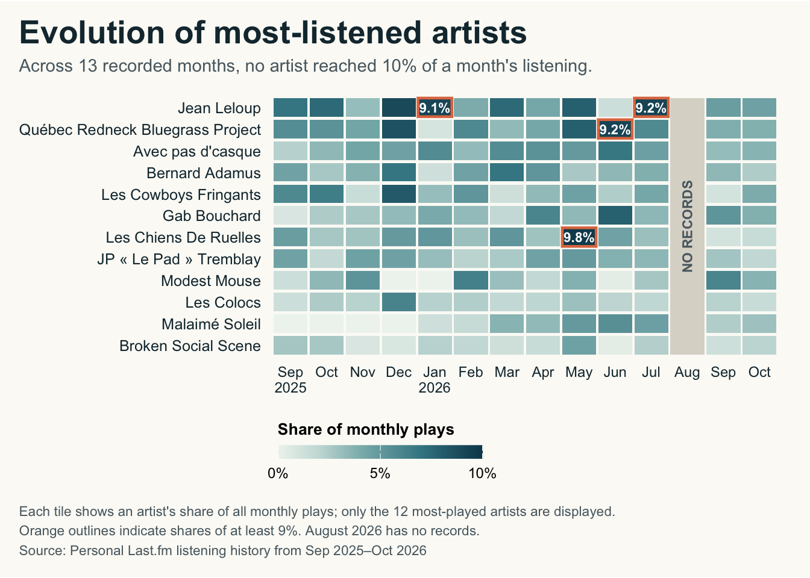

Code
#| label: heatmap-v2
#| echo: false
#| fig-width: 14
#| fig-height: 9
#| fig-alt: "Heatmap of the 12 most-played artists from September 2025 to October 2026. Darker teal indicates higher monthly listening shares, with four peaks highlighted in orange. August 2026 has no records."
paper <- "#FBFAF6"
p_a2 <- ggplot(heatmap, aes(month_id, artist)) +
geom_tile(aes(fill = share), width = 0.94, height = 0.86) +
# Missing month
annotate(
"rect",
xmin = missing_x - 0.47, xmax = missing_x + 0.47,
ymin = 0.57, ymax = length(top_artists) + 0.43,
fill = "#DCD8CE"
) +
annotate(
"text",
x = missing_x, y = (length(top_artists) + 1) / 2,
label = "NO RECORDS", angle = 90,
color = "#596970", fontface = "bold", size = 3
) +
# Highlight monthly shares of at least 9%
geom_tile(
data = peaks, fill = NA, color = "#DF784F",
linewidth = 0.8, width = 0.94, height = 0.86
) +
geom_text(
data = peaks,
aes(label = scales::percent(share, accuracy = 0.1)),
color = "white", fontface = "bold", size = 3
) +
coord_fixed(ratio = 0.6) +
scale_fill_gradientn(
colors = c(
"#EFF4EF", "#C9DDDA", "#8DB9BA",
"#3F8692", "#0B4659"
),
values = scales::rescale(c(0, 0.02, 0.04, 0.07, 0.10)),
limits = c(0, 0.10),
breaks = c(0, 0.05, 0.10),
labels = scales::label_percent(accuracy = 1),
na.value = "#DCD8CE",
name = "Share of monthly plays"
) +
scale_x_discrete(
labels = set_names(month_labels, format(months, "%Y-%m")),
drop = FALSE
) +
guides(fill = guide_colorbar(
direction = "horizontal",
title.position = "top",
barwidth = grid::unit(4.5, "cm"),
barheight = grid::unit(0.3, "cm")
)) +
labs(
title = "Evolution of most-listened artists",
subtitle = paste(
"Across 13 recorded months, no artist reached",
"10% of a month's listening."
),
x = NULL, y = NULL,
caption = paste(
"Each tile shows an artist's share of all monthly plays; only the 12 most-played artists are displayed.",
"Orange outlines indicate shares of at least 9%. August 2026 has no records.",
"Source: Personal Last.fm listening history from Sep 2025–Oct 2026",
sep = "\n"
)
) +
theme_minimal(base_size = 11) +
theme(
plot.background = element_rect(fill = paper, color = NA),
panel.background = element_rect(fill = paper, color = NA),
panel.grid = element_blank(),
plot.title.position = "plot",
plot.title = element_text(
size = 20, face = "bold", color = "#18323D"
),
plot.subtitle = element_text(
size = 11, color = "#596970",
margin = margin(b = 12)
),
axis.text.y = element_text(
size = 9.5, color = "#18323D"
),
axis.text.x = element_text(
size = 9, color = "#18323D",
margin = margin(t = 6)
),
axis.ticks = element_blank(),
legend.position = "bottom",
legend.justification = "left",
legend.title = element_text(size = 10, face = "bold"),
legend.text = element_text(size = 9),
plot.caption.position = "plot",
plot.caption = element_text(
size = 8.5, color = "#596970",
hjust = 0, lineheight = 1.2,
margin = margin(t = 10)
),
plot.margin = margin(12, 18, 12, 12)
)
p_a2